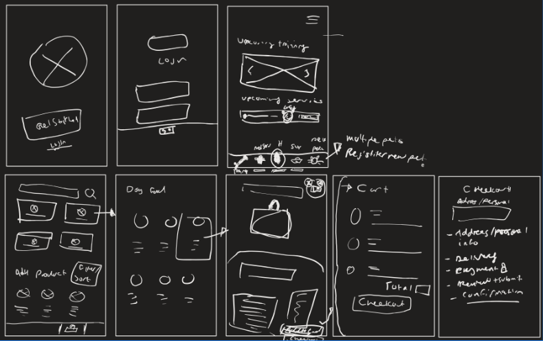
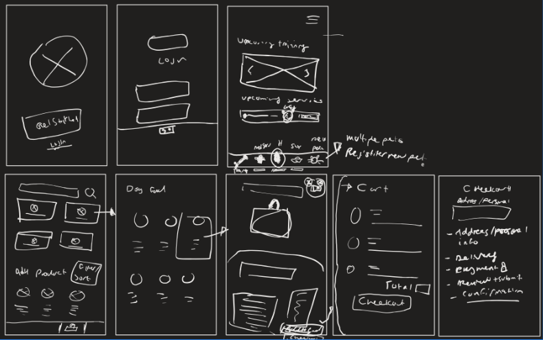

Dog Care App
Class Project
September - December 2020
In this project, my colleagues and I designed a dog service and retail app for a Canine Clinic.
This was one of the projects from my Graphic Design 3 class.
The Clinic wanted the app to allow customers to schedule medical appointments, enroll in puppy and obediences classes, get training and boarding, and a store where the client can buy a variety of canine-related products.
For this project, my group decided to focus on building the shop aspect of the app.
The goal was to build a retail section of the app that allowed customers with various ages and knowledge of technology to access dog-related products and items for their pets.
In addition, we built medium fidelity screens for other aspect of the app such a gamification service that encourages users to walk their pets.
 

The group started out with some primary research to understand what similar apps currently exist in the market.
We wanted to understand the key features of these apps and the way it brings functionality and convenience for its users.
We sketched out some low fidelity wireframes of the specific pages and the user flow of the app from start to finish, and then assigned roles.
I was in charge of designing the checkout process of the shopping experience.
We bounced around with different ideas for the colours, the layout and the animations. We brainstormed and designed 2 personas that the app will be based off of.
We referenced Apple’s Human Interface Guidelines to ensure that the app was seamless and meet the design principles and requirements.
The pictures shown are the final designs of the app. The assignment was presented with the rest of the class and the feedback was great. They loved the overall UI and the prototyping of the app. This project further helped me dig my hands into XD and I expanded more on my knowledge of XD during the process. This project also introduced me to the coediting feature on XD, and I think it is a great tool to help design teams collaborate on a design project.
My Angle
While pet ownership is more common in the West, many of those owners do not walk their pets. A study conducted in Western Australia revealed that 23% of dog owners did not walk their dogs (Cutt, Giles-Corti & Knuiman, 2008). Studies also show that “a dog owner that spends at least 30 minutes a day walking their dog exceeds the 150 minute recommended duration of physical activity per week” (Westgarth, Christley, Marivin & Perkins, 2017). While the majority of the prototype focused on the retail aspect of the app, we also thought of other design problems related to a dog care app, and the different kinds of services we can provide to users in addition to the shop. One of those problems was dog walking. To solve this problem, we decided to design a gamification and reward system that allowed users to accumulate points for every minute(s) or mile(s) they walked their dog. We believed that this would help motivate users to spend more time with their dogs while improving their physical health.
References
Cutt, H., Giles-Corti, B., & Knuiman, M. (2008). Encouraging physical activity through dog walking: Why don’t some dog owners walk with their dogs?. Preventive Medicine, 48(2), 120-126. https://doi.org/10.1016/j.ypmed.2007.08.015 Westgarth, C., Christley, M. R., Marvin, G., & Perkins, E. (2017). I Walk My Dog Because It Makes Me Happy: A Qualitative Study to Understand Why Dogs Motivate Walking and Improved Health. Int. J. Environ. Res. Public Health, 14(8), 936. https://doi.org/10.3390/ijerph14080936